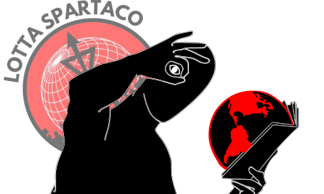

Indice

La liberazione della donna: una prospettiva comunista
Leggi articolo

La rivoluzione in Germania: un'analisi reale (parte prima)
Leggi articolo

Ucraina: tre decenni di lotta
Leggi articolo

La questione israelo-palestinese
Leggi articolo